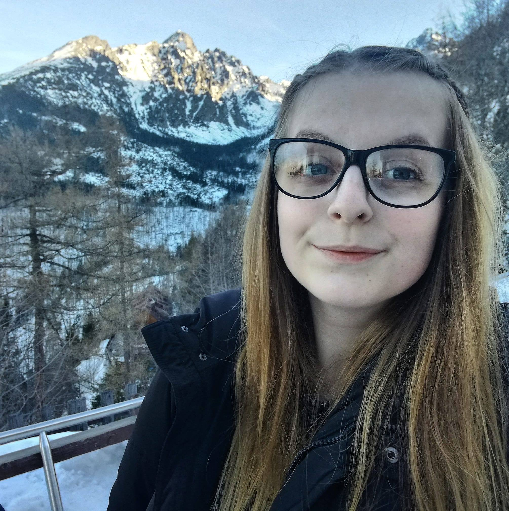

Zuzana

Summary
University Student with the ability to multitask and work well with others. Bilingual, hardworking, and ready to join my next team.
Education
- Master at Pavol J. Šafarik University /2022-present/
- Bachelor at Pavol J. Šafarik University /2019-2022/
- J.A. Comenius Lutheran Bilingual High School /2011-2019/
Work Experience
- Administrative Assistant at AUTOCONT s.r.o.
March 2021 - present
- work in Microsoft Dynamics 365
- invoices and orders
- Sales assistant at Intersport
November 2019 - January 2020
- sales assistant
- communication with customers
- Aupair at COOLAGENT
June 2018 - August 2018, in Stafford, England
- Assitent at 247.sk, s.r.o
July 2017 - August 2017
- communication with clients
- administrative work
- websites - wordpress
Extra-curricular Activities
- Active Member - SAŠAP (Slovak association of students and graduates of psychology)
September 2020 - present
- content creator for instagram of SAŠAP
- active member
- Member Representative of Slovakia - EFPSA (European Federation of Psychology Students' Associations)
April 2021 - April 2022
- I represented SAŠAP as a Member Representative of Slovakia at the international level.
Skills
- Microsoft Office: ⭐️⭐️⭐️⭐️
- Microsoft Dynamics 365: ⭐️⭐️⭐️
- Wordpress: ⭐️⭐️
- HTML: ⭐️⭐️⭐️
- fast learner, adaptability, highly responsible and reliable, effective time management, detail oriented
Languages
- Slovak - native
- English - B2
- German - beginner
Courses and Certifications
- Baum Test /Person s.r.o./
- 7 Creative Leadership Skills that Drive Change /Udemy/
- Employee Engagemnet Managment Coaching Certificate /Udemy/
Other